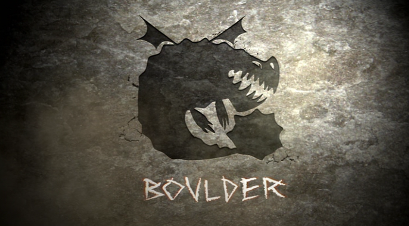
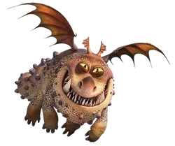
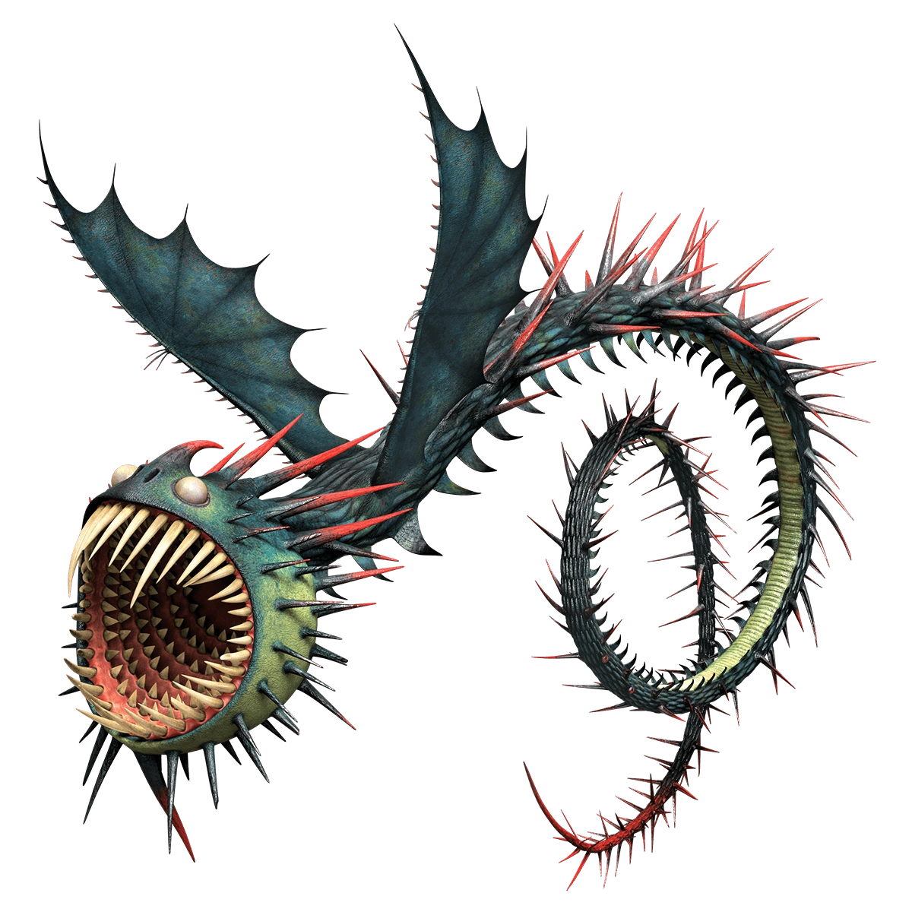

Boulder Class Dragons
Boulder class dragons are tough and associated with the earth. They can eat rocks, which many of them melt within thier stomachs and regurgitate as lava blast. Although they have small wings compared to their body size, they are able to fly as fast and as high as most other dragons can.
The dragon species included are:
Gronckle
(g r o n c k l e)
Description:
One of the toughest dragons in our world is the Gronckle. Gronckles have gigantic heads, short bodies, and round tails. Gronckles are lazy, and spend most of their time sleeping in communal heaps. They have been known to fall asleep while flying, waking only when they crash into the ocean or the side of a mountain. Gronckles have relatively small wings that beat as fast as a hummingbird's. They are slow in the air, but make up for this with their maneuverability. A Gronckle can fly backwards, sideways, and even hover. Gronckles attack from the air, where their primary weapon is most effective. Gronckles chew rocks, melting them in their bellies and firing them as balls of molten lava.
Characteristics:
Grunckle comes with various colors like grey, brown, blue, beige, purple, green. Gronckles have bumps on their body, Small wing to body ratio, Clubbed tail, Sharp canines, and round head. It has huge jaws which can be used to hold food. It has a rather blunt nose horn and fairly stubby toe claws. Its legs are practically useless in battle, and due to its short tail it has a fairly small attack range.
Because the wings of a Gronckle beat at a speed similar to that of hummingbirds', dragonflies', or bees' wings, it is possible for one to sustain flight. In fact, a Gronckle can fly backward, sideways, and even hover in place. However, due to their massive weight and small wings they are the slowest species in the dragon world.
4.51 meters long & 2.62 meters tall
How to train them:
Gronckles love to eat dragon nip and can be calmed with it. Feeding them rocks can also help one train this dragon. Their main diet is rocks, but they can also be fed fish. Because of their generally warm and friendly nature, Gronckles are ideal for young and first-time trainers.
Whispering Death
(whispering death)
Description:
Constantly hungry and always burrowing for unwitting food, the whispering death is one Dragon that actually prefers being on the ground (or, more accurately, under it) to flying freely across the sky.
Although plagued with poor eyesight and a terrible sense of direction that often gets them lost, Whispering Death more than make up for these weak points with their multiple rows of buzz-saw teeth that can bore through any solid materials, including rock.
It is this signature drilling power that creates the hushes rumbling sound which always announces a Whispering Death before it bursts out of the earth to attack.It is this signature drilling power that creates the hushes rumbling sound which always announces a Whispering Death before it bursts out of the earth to attack.
Characteristics:
Whispering death has a grayish steel green body with red highlighted spikes, large head and mouth with rotating teeth inside which it uses to travel through solid rock and to burrow underground, sharp spines that they can shoot from any part of their body and a white bulging eyes.
Whispering Deaths have poor eyesight. This may be connected to them lacking a visible pupil, or living in a dark environment. Being essentially underground cave dwellers, Whispering Deaths' poor eyesight makes them sensitive to bright light.
19.45 meters long & 2.29 meters tall
How to train them:
Whispering Deaths are almost untrainable. They are very destructive and aggressive in nature, attacking anything in their way and are generally feared by other dragons and humans in general. The only way to train a Whispering Death would be to capture it and take your time until you eventually gain its trust or by raising one as a hatchling. You can earn a Whispering Death's respect if you help reunite it with a family member or save its life. Whispering Deaths love to be brushed, especially their teeth. also seem to be fairly easy to train. Giving them a light to chase can help out for training as this could be a great beginner dragon for young Vikings. Or another way of training Terrible Terrors just to feed them, by giving a single Terror a fish, and, showing great trust, as long as you prove to be of no threat to it, Terrors are easy and docile companions. Terrible Terrors can be trained for riding only when they attain Titan Wing status. Dragon Riders train Terrible Terrors with various skills: delivering mail, butting heads, retrieving items, stealth, and firing and attacking on command.
Contact us
Contact no.: 0991-482-1222
Email: elijahlaqui@gmail.com
Facebook: Elijah Kean Laqui